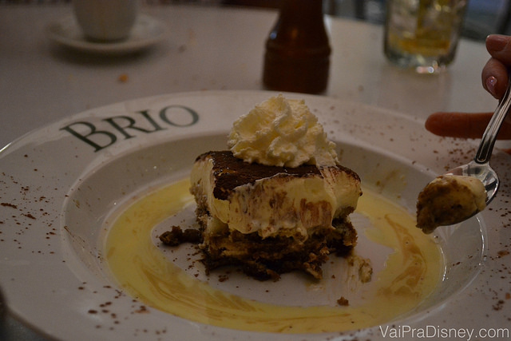

Restaurantes Recomendados

Brio Tuscan Grille: restaurante italiano em Orlando
Hoje vamos falar sobre um restaurante delicioso que muita gente passa na frente em meio as compras e não nota: o Brio Tuscan Grille (que de agora em diante chamarei só de Brio para facilitar). Com uma cozinha de influência italiana, o Brio é na verdade mais um restaurante de gastronomia variada e delicioso. Para mim, é o melhor plano B para os dias em que a sua vizinha popular Cheesecake Factory está muito cheia. Essa recomendação de hoje veio na verdade a pedido de vocês. Nos últimos tempos dividimos muitas dicas de restaurantes dentro dos parques, o que fez com que alguns leitores começassem a nos pedir mais dicas de alimentação fora da Disney também. Pois bem, o Brio é uma deliciosa opção de alimentação fora dos parques, que já estava na lista para vir parar aqui no blog. Como o pedido de post de vocês funciona como um fastpass, ele furou a fila de todas as outras matérias e ganhou o espaço do blog hoje. 
Como boa parte dos restaurantes que nos apaixonamos em Orlando, o Brio faz parte de uma rede de restaurantes, com unidades em todo o país. Na região próxima a Disney são duas casas: uma em Orlando mesmo, que fica no Mall at Millenia, e outra em Winter Park. Eu sempre vou na do Mall at Millenia porque acho o local delicioso para uma refeição sem pressa depois das compras (nunca antes, pois ninguém merece fazer compras de barriga cheia). Quando digo que a refeição tem que ser sem pressa, é porque a carta de drinks e as entradas são a parte que mais gosto do Brio. Eu sou uma pessoa bem viciada em carpaccios, sempre experimento em todos os restaurantes que passo e avalio a qualidade de uma casa italiana pela qualidade de seu carpaccio. Nesse quesito o Brio ganhou muitos pontos comigo, pois o carpaccio além de GIGANTE (para se dividir com certeza), é bem fininho e com um tempero super saboroso. As entradas com frutos do mar que a minha família já pediu lá também fizeram muito sucesso na mesa, mas eu não comi para saber se era gostoso mesmo. Como eu não como frutos do mar, provavelmente não teria nada de bom para dizer para vocês, então prefiro confiar na opinião deles.
Nos pratos principais, apesar das massas serem a grande pedida da casa, o menu também apresenta excelentes opções de saladas, carnes e frutos do mar. O menu é super variado e ainda mais completo no jantar, em que é apresentado em uma versão maior. Para os carnívoros de plantão que estiverem com bastante fome, fica a dica da deliciosa Bisteca alla Fiorentina com uma massa na manteiga. A dica é do meu pai que entende do assunto, mas já foi provada e aprovada por mim também! Vale dizer que os pratos são grandes, mas não gigantes como os da Cheesecake Factory por exemplo. Se você tiver com pouca fome, dá para dividir a maioria dos pratos. Vai realmente depender do tamanho da sua fome, então peça instrução para o garçom a respeito do que você está querendo pedir para avaliar se vale ou não dividir.

O menu de sobremesas do Brio também é bem legal, e tem uma opção que eu adoro nos restaurantes americanos, o chamado sample menu, um prato que traz várias miniaturas de sobremesas, excelente pedida para os curiosos (como eu) que não sabem o que escolher. Outra favorita da minha família no Brio é o Tiramissu, muito bem preparado pela casa, fazendo valer a sua raiz italiana.
Vale dizer que além de tudo isso, o Brio também oferece Brunch (refeição que mistura café da manhã e almoço). Eu nunca fui mas também não recomendo, porque o cardápio deles é bem simples para esta refeição. Se você quiser ir num brunch, melhor ir num bem legal, né? Se ficou interessado nessa opção, considere por exemplo o Cape May que em seu café da manhã oferece vários pratos de brunch. Guarde o Brio para as outras refeições que você vai se dar bem.
Gostou? Então considere o Brio para fechar a noite pós compras no Mall at Millenia ou até sua unidade no Winter Park. Depois conta para a gente o que achou, tá?
Nome: Brio Tuscan Grille
Endereço: 4200 Conroy Road, Orlando, FL 32839 (Veja no Google Maps)
Telefone: +1 407-351-8909
Referência: Dentro do Mall at Millenia, ao lado da Cheesecake Factory.
Preço: US$25 a US$40 dólares por pessoa em média, podendo variar muito dependendo do pedido.
Horário de Funcionamento: Seg a Qui: 11am -10pm – Sex e Sáb: 11am-11pm – Dom 10am-10pm (sujeito a alterações)
Cardápio:clique aqui para visualizar o cardápio (em inglês)
Disney Dining Plan: Não, o restaurante fica fora do complexo Disney.
Avaliação do VPD: